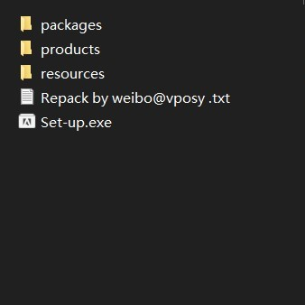
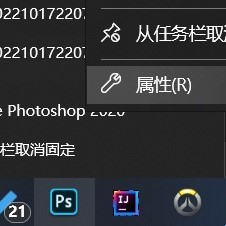
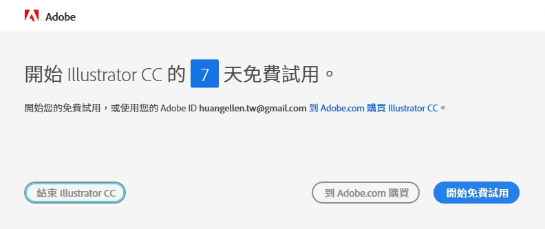

前言
为防止版权等纠纷请允许我叠个甲，下面是Vposy大佬的官方T文
2022.9.5 更新
🔐 默认解压密码 / Default Unzip Password: @vposy
🔗 下载链接 / Download Link:
百度 Baidu: http://t.cn/A6KvfxCs
- 提取码 / Access Code: 6g8x
via https://weibo.com/1112829033/M4oNMeTHu
* 若链接失效，请在登录微博和关注博主后，自行查看置顶博文中的最新链接。
————————————————
本频道为微博 @vposy 的非官方 RSS 推送频道，建立初衷仅为丰富 Telegram 中文资源，与其没有任何关联。
频道内标记有 sponsored、赞助、广告等字样的消息，为 Telegram 平台投放的广告，与本频道没有任何关联，请注意甄别。
1、下载所需软件包
点击上方T文的链接进行及下载，下载后全部进行解压，解压密码藏在前言里XD
2、安装
1)执行set-up.exe程序进行安装
2)选择默认位置即可
3、配置部署
1)右击已安装的程序属性
2)打开根目录
3)找到***_Original.exe（***代表所对应的软件名，比如安装Photoshop时该可执行文件名为Photoshop_Original.exe）

4)开启网络代理并执行***_Original.exe
5)等待登陆界面出现后进行注册并登录
6)如果出现，进行试用，则已经成功，退出即可
注意
由于联网校验具有时效性，每过一段时间需要重新进行3、配置部署内的操作